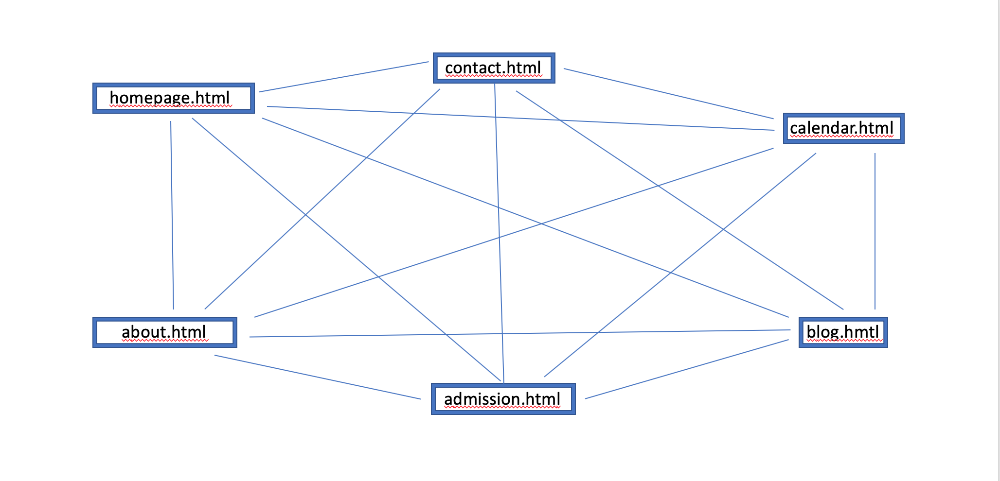

School - Website
Date: September 20th 2019
Authors:
- Jens Georg Berg-Jensen
- Robert Nicolai William Balfour
- Anna Bakkebø
- Endre Sørmo Rundsveen
Our client: La Escuela
Our client, Arne Brillestad, is the headmaster at La Escuela. La Escuela is a private elementary school in
Norway.
The school has creativity and sustainability as their main focuses.
Purpose and goals
The website will function as the main information hub from the school to its
users. The parents will here be able to retrieve important information about the school as well as be able to
apply for their children to attend the school.
Audience
The website is aimed mainly towards parents of current or future pupils. Pupils can also use the site, but it
will mostly be directed towards the parents. Parents often have a need to get information about what their
children
are doing every day. The children often get information at school, but forget to tell their parents. This
website
will therefore be able to fill that need for information for the parents.
Navigation structure
The navigation structure of La Escuela's website can be described as a clique, as all the webpages are linked to
each other. This can be seen visually in the picture below. Every page has a navigation bar and a footer, where
it is possible to access all of the pages included in the website.

Page layout and appearance
Font
Font sizes:
- h1: 30px
- h2: 24px
- h3: 22px
- h4-h6: 20px
- p: 18px
Font colors:
- General text: RGB - 59,56,56
- Navigation bar: RGB - 164,52,26
Color scheme
-
Background - RGBA - 242,242,242,50%
-
Background some items: RGB - 169,209,142
-
Footer: RGB - 84,130,53
-
Social media icons: RGB - 255,255,255 (white)
-
Links not clicked: RGB - 64,64,64
Links clicked: RGB - 0,0,0
Navigation bar
The navigation bar will be available on all the pages of the website. It will be sticky, meaning it will always
at the top of the screen. When clicking the about button it will open a menu below the navigation bar. This menu
will not be sticky.
Footer
The footer will be on the bottom of the page. If the page isn't filled with content the footer will be at the
bottom of the page. If it is filled with content the footer will be pushed below the content. The footer will
contain contact information and links to the different parts of the website.
Fulfillment of goals
With having the navigation bar available on all pages it becomes easy to navigate through the different parts of
the website.
With having both the text and the links grey or black it projects some sence of maturity from the school.
We wanted this because the audience are the parents of the children and might be looking for a serious school
that is mature and knows how to relate to parents, as well as children.
Content
-
Homepage - homepage.html
The homepage will be the first page that the users will see. The page will include some content in the form
of
major news on the front page. Pictures that are included in the news paragraphs will be floated to the right
of the text.
-
About - about.html
The About page will have the general information about the school, and beneath will have the different
services
that the school provides, in a list-form. The goals of the school will be shown within a rounded box on the
top of the page.
-
Application - application.html
The application page will have a scheme that users can fill in information concerning an application for the
school. It will also have all the required information and deadlines concerning applying.
-
Contact - contact.html
The contact page will have a list of telephone numbers and information about different ways to contact the
school.
With some of the people there will be small thumbnail pictures of the contact personel, as this gives a good
look.
The pictures will not be more than 50px big in size either way.
-
Blog - blog.html
Here all the information or blog posts will be posted. If the parents want to read more information than
what's
on the homepage they can go to this page.
-
Calendar - calendar.html
Here all the events for the school will be posted. The homepage will also be able to retrieve major events
that
will be posted to the small calendar on the homepage.
Requirements
-
Dropdown menu
- There will be a dropdown menu when the user clicks on about or the arrow next to about.
-
On this dropdown menu the user will be able to choose between the pages: about.html, contact.html,
blog.html and calendar.html
Here contact, blog and calendar are subpages of the about webpage
-
Slideshow for images on homepage
-
On the homepage there will be an image just below the header, as shown on the mockup. We want this
to be a slideshow of images that changes automatically.
- Application
- Calendar that retrieves events from the calendar page to the small calendar on the homepage
Plan
- To-do-list
- Need a HTML file for the homepage
- Styling file
-
Need HTML files for the different subpages
- Front tab and page
- About tab and page
- Contact tab page
- Application tab and page
- Need a folder with the different images
- A folder with the different script files.